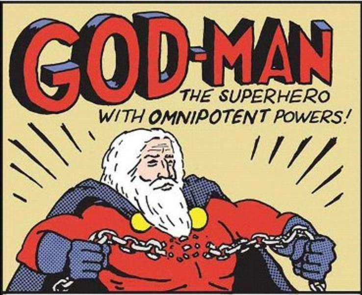

Overview
Asaram Bapu, Swami Rampal, Radhe Maa, Nithyananda Swami and now Sarathi Baba- what do all these people have in common? The common strand that connects all these people apart from the fact that they are all self-styled godmen or godwomen , is that they have all been implicated in various criminal cases . We consider our land to be that of spiritual greatness and religious fervor. But, as the above mentioned people have shown over the years, the same values which guide our society often guide us into their traps. We, as a nation have certainly proven ourselves to be susceptible to the charms of these miracle peddlers. The above mentioned people are symptoms of the mindset prevalent in our society- a mindset riddled with fear, greed and superstition which allow these people to lord over us.
Why Are Indians So Gullible?
The reason is not that hard to fathom. In today’s materialistic society, most of us want wealth, success and fame without any hard work. These desires provide avenues to these “godmen” to exploit us by promising us shortcuts to success. They work as service providers or facilitators to facilitate us with a short route to success. They operate quite cleverly managing to evade any minor suspicion. Their modus operandi can be understood to be similar to that of a person like Don Vito Corleone(from The Godfather) or a Bhai, who offers us a miraculous deal. Now these “godmen” work on similar principles except for the fact that the suit is replaced either by a saffron coloured outfit or an outlandish makeup with lots of ‘sindoor’. Also, from our childhood, we are accustomed to offering bribes to God in the form of offerings or ‘bhog’ to achieve our goals. This makes the deals offered by these people sensible to us and we walk into their traps like gullible persons.
Why Do We Need To Blame And The Way Out
As per my view, the “godmen” or “godwomen” should not be blamed alone. Rather, the society and mindset which fosters such individuals should also be party to the blame. Without a mindset and society which fosters them and allows them to propagate their roots, these people will certainly lose their importance. Our ancient philosophy does not treat God like a child who can be appeased with a few toys. Rather ,our ancient scriptures state that by offering anything produced under the Sun to God, we are committing a sin as we would only be offering the Rightful Owner His property. We should look to rise above the mentality that compels us to view greed and suspicion as the true values of the society. Rather, we should strive towards creating a society which can rise above such things. Because, as long as the current societal mindset will hold sway, there will rise more of the ilk of these self-proclaimed godmen who seek to deceive innocent and gullible people.